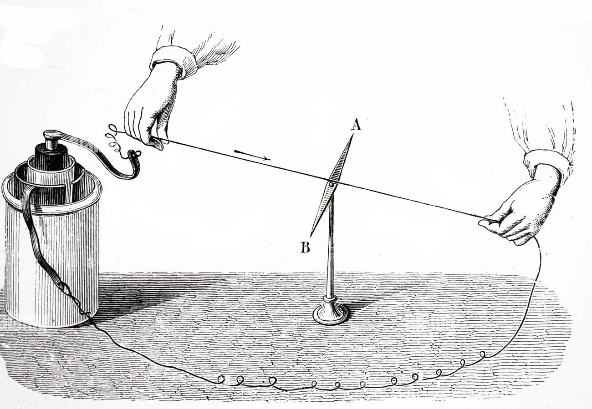
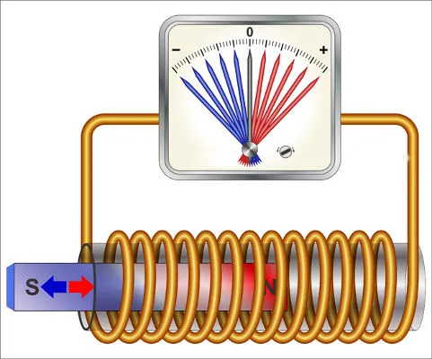

Eletromagnetismo em Ciências
Uma narrativa experimental sobre como uma corrente cria campo magnético, como um campo magnético variável cria corrente e como cargas em movimento passam a sentir uma força magnética.
Linha mestra da descoberta
1820 → 1831 → 1864 → 1895
Oersted abre a porta, Faraday revela a indução, Maxwell organiza a teoria e Lorentz descreve a ação dos campos sobre cargas em movimento.
Entre esses marcos, Biot-Savart, Ampère e Lenz dão precisão matemática e direção física ao fenômeno.
Do fio à bobina, da bússola ao campo: cada experimento respondeu uma pergunta e abriu outra.
Mapa da descoberta
1820
Oersted vê a bússola desviar quando o fio é percorrido por corrente.
1820-1826
Biot-Savart e Ampère descrevem o campo produzido por uma corrente.
1831-1834
Faraday descobre a indução e Lenz fixa o sentido da resposta.
1895
Lorentz formaliza como os campos empurram partículas em movimento.
A história do eletromagnetismo é um diálogo entre corrente, campo, movimento e simetria.
Quando uma dessas peças ficou clara, a outra passou a fazer sentido também.
1820
O efeito não estava na bateria em si, mas no campo criado pela corrente no fio.

A bússola responde ao campo circular ao redor do fio. O sentido do desvio muda quando a corrente muda de direção.
1820-1826
Biot-Savart
\( d\vec B = \frac{\mu_0}{4\pi}\,\frac{I\,d\vec\ell \times \hat r}{r^2} \)
É a forma geral: cada pequeno trecho de corrente contribui para o campo total em um ponto do espaço.
Por isso ela é poderosa em geometrias arbitrárias, mesmo quando a conta fica mais longa.
Ampère
\( \oint \vec B \cdot d\vec \ell = \mu_0 I_{\mathrm{enc}} \)
Quando há simetria, a circulação do campo simplifica o problema e revela o padrão com elegância.
Fio retilíneo, solenóide e toroide viram exemplos clássicos dessa ideia.
\[ B = \frac{\mu_0 I}{2\pi r} \]
Biot-Savart diz como somar o campo. Ampère diz como aproveitá-lo com simetria.
1831
Michael Faraday moveu um ímã para dentro e para fora de uma bobina conectada a um galvanômetro. A corrente só aparecia enquanto havia movimento relativo.

O ímã só gera corrente enquanto o fluxo magnético muda. Sem movimento, o galvanômetro volta ao zero.
Lei de Faraday e Lei de Lenz
Fluxo magnético
\( \Phi_B = \int \vec B \cdot d\vec A \)
Ele mede quantas linhas de campo atravessam uma área orientada.
Se o campo, a área ou o ângulo mudam, o fluxo também muda.
Lei de Faraday
\( \mathcal{E} = -\frac{d\Phi_B}{dt} \)
A força eletromotriz induzida é proporcional à rapidez com que o fluxo varia.
É a equação que transforma a observação de Faraday em linguagem matemática.
Lei de Lenz
O sinal negativo diz que a corrente induzida reage contra a variação que a produziu.
Se o fluxo aumenta, a bobina tenta reduzi-lo. Se o fluxo diminui, a bobina tenta mantê-lo.
Esse detalhe garante a conservação de energia no processo.
O sinal negativo não é decoração algébrica. Ele indica a direção da resposta da bobina.
Força magnética
A força magnética curva a trajetória, mas não acelera a carga na direção do movimento.
Forma geral
Desvio
\( \vec F = q(\vec E + \vec v \times \vec B) \)
\( \vec F_B = q\,\vec v \times \vec B \)
Quando o foco é apenas o efeito magnético, o produto vetorial deixa claro por que a força é sempre lateral ao movimento.
\( \vec F = I\,\vec L \times \vec B \)
Linha do tempo
1820
Corrente em um fio desvia a agulha de uma bússola e revela o vínculo entre eletricidade e magnetismo.
1820-1826
O campo criado por correntes passa a ser descrito e calculado com precisão matemática.
1831
Ao mover um ímã perto de uma bobina, descobre que a variação do campo induz corrente elétrica.
1834
O sentido da corrente induzida passa a ser entendido como oposição à variação que a produziu.
1864
As leis ganham forma unificada e passam a descrever eletricidade, magnetismo e luz como um único campo.
1895
A força sobre cargas em movimento é formulada de modo geral e conecta teoria e aplicações tecnológicas.
Síntese
Corrente
Oersted mostra o primeiro elo e Ampère organiza sua descrição matemática.
Campo
Biot-Savart e Ampère explicam a forma do campo em torno das correntes.
Variação
Faraday e Lenz mostram que mudar o fluxo magnético produz corrente elétrica.
Força
Lorentz fecha o ciclo ao descrever a ação do campo sobre partículas em movimento.
No eletromagnetismo, corrente, campo e força deixam de ser capítulos separados e passam a fazer parte da mesma história.
Maxwell dá a unificação teórica; os experimentos de Oersted e Faraday dão a prova física.